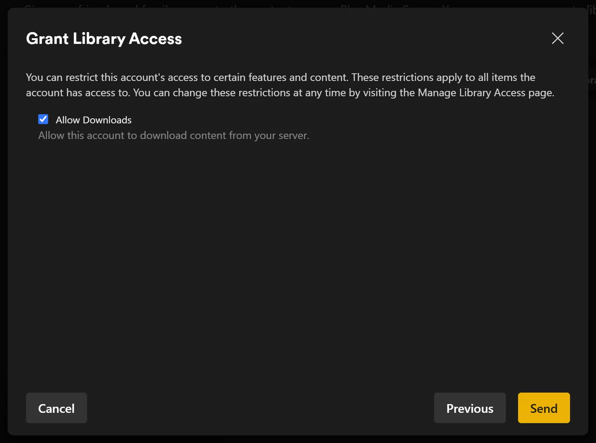
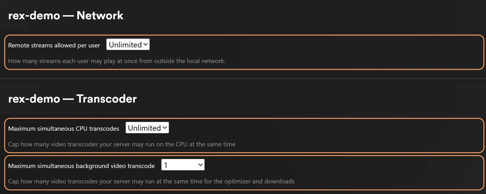

Partager rex avec la famille et les amis
Partagez rex depuis son compte enregistré via Manage Library Access de Plex. Chaque personne se connecte à Plex avec son propre compte et voit rex à côté de ses autres serveurs, avec son propre historique de visionnage.
Commencez par configurer rex sur un nouveau compte Plex. Utilisez rex avec votre propre application rex avec vos addons Stremio ou rex avec zurg. Ci-dessous, le propriétaire désigne ce compte.
Qui est qui
Votre propre compte ne reçoit pas plus que n'importe quelle autre personne avec qui vous partagez. Pourquoi : Mon compte Plex est-il en danger ?
Inviter quelqu'un
- Connecte-toi sur app.plex.tv en tant que propriétaire, puis ouvre Settings (la clé à molette), Manage Library Access et Grant Library Access.
- Entre le nom d'utilisateur ou l'e-mail Plex de la personne, choisis le serveur rex et les bibliothèques à partager, puis envoie l'invitation.
- Elle l'accepte en se connectant avec son propre compte. L'invitation arrive par e-mail et dans app.plex.tv. Chaque invitation s'accepte séparément.

Une bibliothèque que tu ajoutes plus tard (une que une source déclare, comme une bibliothèque Anime ou celle d'un catalogue rex-stremio, ou une créée avec Add Library) n'est dans le partage de personne pour l'instant. Ajoute-la à chaque partage dans Manage Library Access.
Ce qu'elle devrait voir. Connectée avec son propre compte, son appli Plex affiche rex à côté de ses propres serveurs. À la maison, ça suffit. En dehors de chez toi, lis la suite.
À la maison et en déplacement
À la maison, les applis Plex trouvent rex toutes seules sur ton réseau quand rex utilise le port 32400.
Loin de la maison, ce qui est toujours le cas pour un ami dans une autre maison, leurs applis ont besoin de l'adresse HTTPS de rex. rex n'a pas de relais. Le plus simple est rex-direct : redirige le port 32400 de ton routeur vers la machine de rex. Sans IPv4 publique mais avec IPv6, ouvre l'accès en IPv6 à la place ; le réseau de ton ami doit alors aussi avoir IPv6. Utiliser hors de chez toi couvre celui-ci et les autres solutions.
Ta vitesse d'envoi est la limite. Chaque flux regardé loin de la maison sort par l'envoi de ta connexion maison, au débit propre du fichier sauf s'il est converti. Donc deux personnes qui regardent en même temps ont besoin de l'envoi pour les deux. Trois choses aident :
-
Qualité plus basse. Une personne qui choisit une qualité en dessous de Original dans le lecteur reçoit un flux converti, plus petit. Ça nécessite FFmpeg sur la machine de rex (Conversion vidéo). Les applis Plex sur téléphone en données mobiles limitent la qualité à 720p et 4 Mbps, donc sans FFmpeg un titre 1080p là-bas est refusé tant qu'elles ne sont pas réglées sur Original en qualité mobile.

-
Les applis téléchargent chez ton fournisseur. Plezy et Plex pour Android peuvent récupérer un fichier depuis le lien fourni par ta source, comme celui de ton service debrid, donc ta connexion ne transporte rien de tout ça : Les applis téléchargent chez ton fournisseur. Ton fournisseur voit alors chaque personne télécharger depuis sa propre adresse, donc vérifie ses règles avant de partager comme ça.
-
Une limite par personne (ci-dessous).
Pas besoin de Plex Pass. Tes amis n'ont pas besoin de Plex Pass ni de Remote Watch Pass pour regarder loin de chez toi. C'est vérifié dans Plex Web avec des comptes gratuits des deux côtés ; les autres applis n'ont pas été testées loin de la maison.
Enfants : utilisateurs gérés
Si le propriétaire a un Plex Home avec des utilisateurs gérés, un utilisateur géré fonctionne sur rex comme sur un serveur Plex. Partagez rex avec lui depuis Manage Library Access, comme pour n'importe qui, puis limitez ce qu'il voit (voir ci-dessous). Il aura son propre historique de visionnage. rex a été testé avec le partage d'un utilisateur géré limité aux films uniquement, aux titres classés G et PG uniquement, et sans téléchargements.
Ce que chaque personne peut voir et faire
Vous les choisissez par personne, dans leur partage dans Manage Library Access, comme sur n'importe quel serveur Plex. rex les applique partout : dans les listes de bibliothèques, la recherche, les rangées de l'écran d'accueil et les pages des titres.
Plex n'affiche Ratings et Labels dans un partage que si le compte propriétaire a Plex Pass. Sur un compte gratuit tout neuf, le partage propose Allow Downloads seul ; les limites propres à rex, ci-dessous, permettent de régler les classifications et les labels sans Plex Pass.

rex est informé d'une modification par plex.tv au moment où vous la faites. Si elle n'apparaît pas, redémarrez rex.
rex peut aussi appliquer ses propres restrictions à un partage, en plus de celles de Plex. Elles ne peuvent que réduire ce que Plex autorise. Elles se définissent avec une commande plutôt que dans une application Plex : Contrôles du propriétaire en local.
Qui peut faire quoi
Les collections et les affiches appartiennent au serveur, donc tout le monde voit les mêmes.
Récupérer l'historique de chacun
Tout le monde avec qui vous partagez peut copier ce qu'il a regardé et noté sur un autre serveur Plex, chacun avec ses propres jetons : Importez votre historique de visionnage. Lancer l'opération ne modifie l'historique de personne d'autre.
Combien en même temps
rex ne fixe pas lui-même de limite au nombre de personnes qui regardent en même temps. Ce sont ta bande passante d'envoi, ta machine et ta source qui la fixent. Chaque conversion lance FFmpeg sur la machine de rex. Le nombre de conversions simultanées que ta machine peut suivre dépend de la machine, et deux conversions en même temps n'ont pas encore été mesurées. Une vidéo copiée (seul le son est converti) ne coûte presque rien.
Pour fixer des limites, connecte-toi en tant que propriétaire et ouvre les réglages du serveur :
rex refuse une lecture au-delà de la limite.
